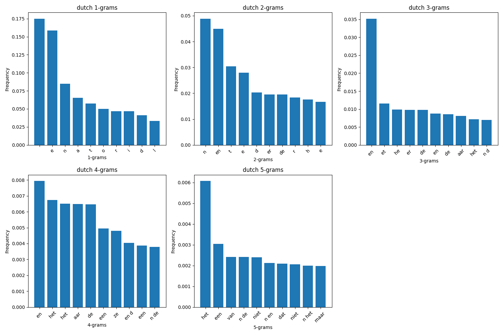
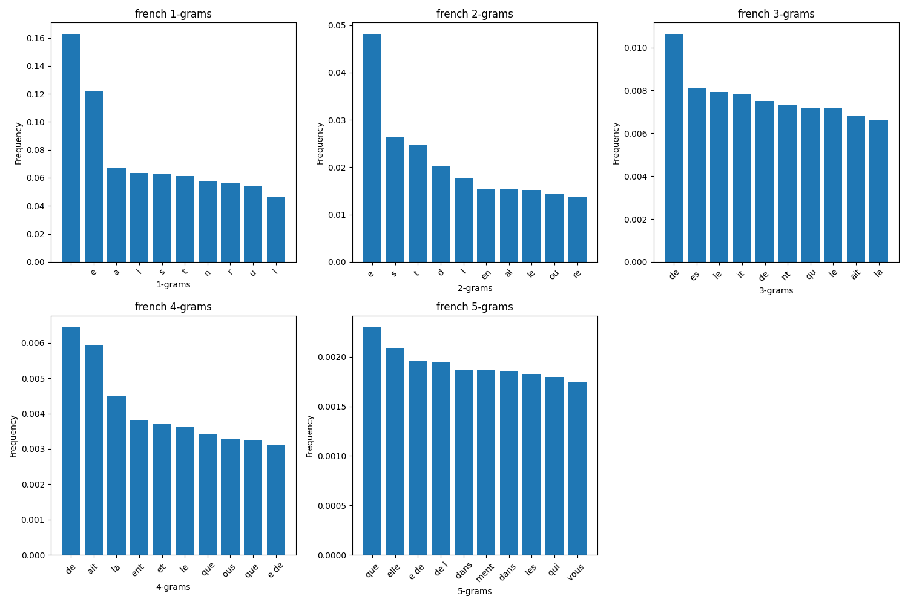

Jul 04, 2026 | 1032 words | 10 min read
14.3.1. Task 1#
Learning Objectives#
Read and process text files using Python.
Build and normalize frequency models and save them as CSV files.
Visualize analysis results using plots.
Introduction#
Identifying the language of a written text can be a challenging task, but using what you have learned about Python programming, you can create a program to analyze and compare different languages. A simple way to compare written languages is to examine how often different character patterns appear.
One common approach is to build n-gram frequency models. An n-gram is a sequence
of \(n\) consecutive items. In this task, we will focus on character n-grams, where
the consecutive items are consecutive individual characters in a given text. For
example, the 2-grams (or bigrams) in the word hello are he, el, ll, and lo.
Different languages tend to produce different n-gram distributions. In this task, you will select one language sample at a time, build n-gram relative frequency models for that language, save the model as a CSV file, and visualize the results using plots. These models will be used in the next task to classify the language of an unknown text.
Task Instructions#
Develop a Python program that lets the user select one language sample text file, builds n-gram relative frequency models for that language, and displays the results.
Before creating the program, create a flowchart of the algorithm you will use and save
it as py4_ind_1_username.pdf. Then start
your program from a copy of the
ENGR133_Python_Template.py
Python template. Your program should be named
py4_ind_1_username.py. You will also
need to create a folder named sample_texts within the same folder as your
Python script. Then, download each of the sample texts in
Table 14.7 and place them into your sample_texts
folder. Your program should do the following:
Display the available language samples and ask the user to select one language.
Load the selected sample text file.
Clean the text data by removing punctuation, ensuring consistent casing (e.g., all lowercase), and removing any non-alphabetic characters.
For the selected language sample, build n-gram counts for \(n = 1, 2, 3, 4, 5\).
Normalize the n-gram counts to obtain relative frequencies.
Save the selected language model to a CSV output file.
Generate plots showing the top 10 1-grams, 2-grams, 3-grams, 4-grams, and 5-grams for the selected language.
Sample Text |
Download Link |
|---|---|
Dutch Sample Text |
|
English Sample Text |
|
French Sample Text |
|
German Sample Text |
|
Italian Sample Text |
|
Spanish Sample Text |
Note
Make sure you saved the samples into your sample_texts folder, and that your folder is
located in the same directory as your Python script.
Step 1: Select and Load a Sample#
In your main function, display the language sample files in the sample_texts
folder and ask the user to select one language to process. After the user selects a
language, read only that selected file.
When using open() to read the text files, ensure you specify the correct
encoding (encoding='utf-8') to handle special characters properly.
Note
The iterdir() method from the pathlib module can be useful for
listing all files in a directory.
from pathlib import Path
path = Path("sample_texts")
files = list(path.iterdir())
Path objects have a name attribute that can be useful for displaying file
names and extracting the language name from a file such as sample_english.txt. You
can read more about it in the official
documentation.
Step 2: Clean Text Function#
Create a function named clean_text.
Arguments:
text(str): The selected sample text.
Returns:
str: The cleaned text.
The cleaning process should do the following:
Convert all text to lowercase.
Remove all characters that are not in that language’s alphabet or a space (i.e., remove punctuation, numbers, special characters, and newlines).
Note
You can find various very useful methods for string manipulation in the official documentation.
Step 3: Create N-gram Function#
Create a function named create_n_gram.
Arguments:
n(int): The size of the n-grams to generate.text(str): The cleaned text for a single language.
Returns:
dict: A dictionary where each key is an n-gram of size
nand each value is the count of how many times that n-gram appears in the text.
Step 4: Normalize N-gram Function#
Create a function named normalize_n_gram.
Arguments:
n_gram(dict): An n-gram count dictionary as returned bycreate_n_gram.
Returns:
dict: A new dictionary with the same keys but with relative frequencies as values.
The relative frequency of an n-gram is calculated by dividing its count by the total number of n-grams. To keep our models smaller, do not include n-grams with a relative frequency less than or equal to 0.0005 in the normalized model.
Step 5: Create Models Function#
Create a function named create_models.
Arguments:
text(str): The cleaned text for the selected language.
Returns:
dict: A dictionary named
modelsstoring normalized n-gram dictionaries for \(n = 1, 2, 3, 4, 5\).
The dictionary should store the normalized n-gram dictionaries as follows:
models["1"] = normalized_1_gram_dictionary
models["2"] = normalized_2_gram_dictionary
models["3"] = normalized_3_gram_dictionary
models["4"] = normalized_4_gram_dictionary
models["5"] = normalized_5_gram_dictionary
This keeps the data structure organized for the next steps of saving to CSV and plotting.
Step 6: Save to CSV Function#
Create a function named save_to_csv.
Arguments:
n_grams(dict): The language’s model dictionary as returned bycreate_models.language(str): The selected language name.
This function should save one CSV file named py4_ind_1_lang.csv, where lang is the
language name. For example, the English file should be named py4_ind_1_english.csv.
Use the following CSV format:
n,ngram,frequency
1,a,0.0723
1,b,0.0141
2,th,0.0254
Each row should contain:
n: the n-gram sizengram: the n-gram textfrequency: the relative frequency for that n-gram
The csv module from the Python standard library may be used to write this
file.
Step 7: Plotting Function#
Use the provided plot_top_k function in your program. This function takes in
a dictionary containing the selected language’s models (as returned by
create_models), the selected language name, and the number of top n-grams to
plot. It generates five bar plots showing the top \(k\) n-grams and their
relative frequencies for \(n = 1, 2, 3, 4, 5\).
import matplotlib.pyplot as plt
def plot_top_k(models, language, k=10):
fig, axs = plt.subplots(2, 3, figsize=(15, 10))
row = 0
col = 0
for n in range(1, 6):
ax = axs[row][col]
n_gram = models[str(n)]
top_ngrams = sorted(n_gram.items(), key=lambda x: x[1], reverse=True)
top_ngrams = top_ngrams[:k]
grams = []
freqs = []
for gram, freq in top_ngrams:
grams.append(gram)
freqs.append(freq)
ax.bar(grams, freqs)
ax.set_title(f"{language} {n}-grams")
ax.set_xlabel(f"{n}-grams")
ax.set_ylabel("Frequency")
ax.tick_params(axis="x", rotation=45)
col += 1
# move to next row after 3 columns
if col == 3:
col = 0
row += 1
axs[1][2].axis("off")
plt.tight_layout()
plt.show()
Step 8: Main Function#
In your main function, you will need to do the following:
Display the language samples in the
sample_textsfolder.Ask the user to select one language sample to process.
Read and clean the selected sample text.
Create relative frequency n-gram models for \(n\) from \(1\) to \(5\) for the selected language.
Save the selected language’s n-gram models to a single CSV file named
py4_ind_1_lang.csv, wherelangis the name of the language (e.g.,py4_ind_1_english.csv).Plot the top \(10\) n-grams for all five n-gram sizes for the selected language.
To create all CSV files needed for the next task, run your program once for each language. You only need to submit your completed Python file and flowchart.
Sample Output#
Test cases for the n-gram analysis and visualization. Use the values in Table 14.8 below to test your program.
Case |
language selection |
|---|---|
1 |
1 |
2 |
a |
3 |
q |
Ensure your program’s output matches the provided samples exactly. This includes all characters, white space, and punctuation. In the samples, user input is highlighted like this for clarity, but your program should not highlight user input in this way.
Case 1 Sample Output
$ python3 py4_ind_1_username.py 1. dutch 2. english 3. french 4. german 5. italian 6. spanish Select a language to process (q to quit): 1

Fig. 14.3 Case_1_sample_output.png#
Case 2 Sample Output
$ python3 py4_ind_1_username.py 1. dutch 2. english 3. french 4. german 5. italian 6. spanish Select a language to process (q to quit): a Invalid selection. 1. dutch 2. english 3. french 4. german 5. italian 6. spanish Select a language to process (q to quit): 3

Fig. 14.4 Case_2_sample_output.png#
Case 3 Sample Output
$ python3 py4_ind_1_username.py 1. dutch 2. english 3. french 4. german 5. italian 6. spanish Select a language to process (q to quit): q
Deliverables |
Description |
|---|---|
py4_ind_1_username.pdf |
Flowchart(s) for this task. |
py4_ind_1_username.py |
Your completed Python code. |